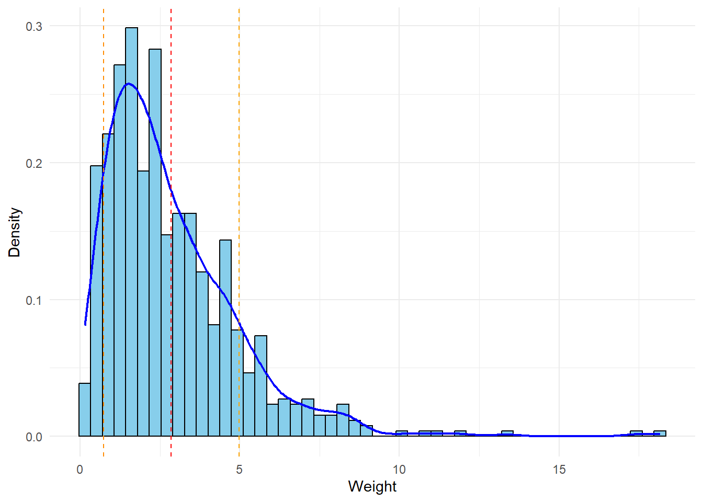
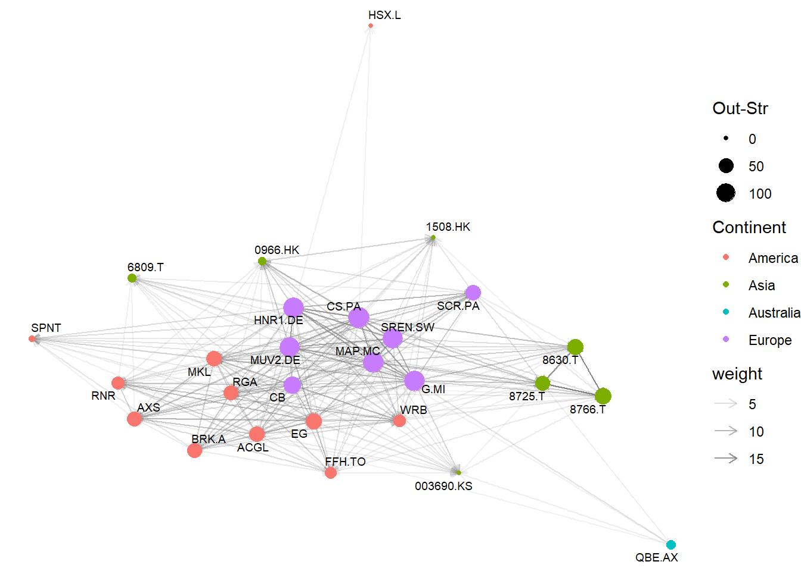
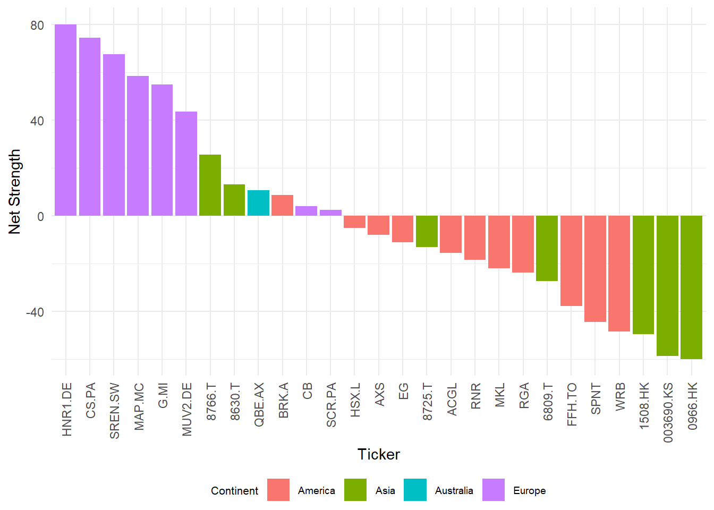
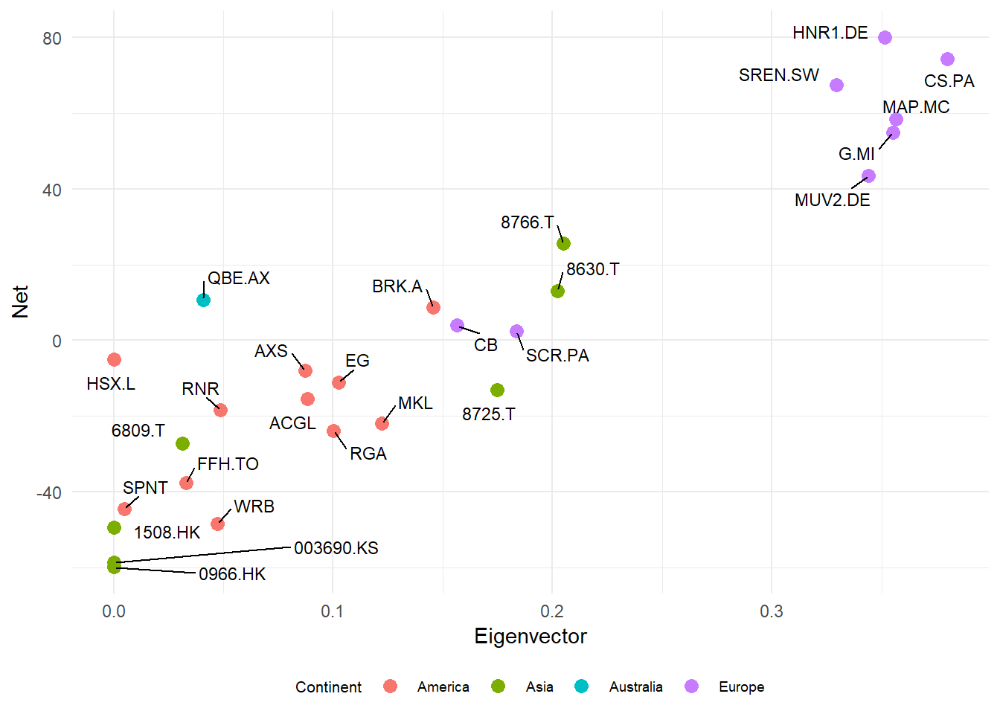
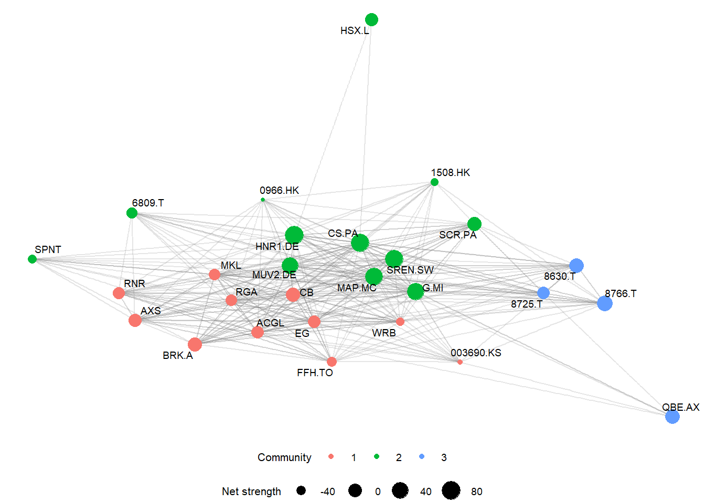

3 Static Network Analysis
3.1 Introduction
In this chapter, we report the results of the application of the methodology presented previously. We start by analyzing the outcomes of the BVAR model on the reinsurers’ volatility and the connectedness table derived from the generalized forecast error variance decomposition (GFEVD), then we move to the network analysis of the reinsurance market, reporting the global topology measures and the connections between market players. We proceed then to a micro-prudential analysis of the network, assessing the key central reinsurers and their systemic importance, to later move on community detection and cluster analysis.
In this research the network is defined as a graph \(G = (V, E)\) where
- \(V\) is the set of nodes representing the reinsurance companies selected for the study
- \(E\) is the set of edges representing pairwise forecast error variance contributions between companies
The weighted directed network is constructed on the adjacency matrix deriving from the BVAR model applied to the Yang-Zhang log-volatility and the GFEVD over a time horizon of 10 days. To construct the network topology, in which the directions of the edges represent the explanation of variance (from source to target), the adjacency matrix was transposed1 Consequently, a directed edge from company \(j\) to company \(i\) reflects the proportion of \(i\)’s forecast error variance explained by \(j\), ensuring that the out-strength captures a firm’s variance contribution. The graph \(G_{full}\) consists of \(|V| = 27\) nodes and \(|E|=702\) edges. The connections between nodes are presented in Table \(\ref{tab:conn_tab}\), where entry \(A_{ij}\) represents the pairwise relationship between company \(i\) and company \(j\), or in graphical terms the weight of the edge \(E\) that quantifies the proportion of company \(i\)’s forecast error variance attributable to changes in company \(j\). The cross diagonal elements, \(A_{ii}\) represent the forecast error variance explained by its own forecast, while row sums (\(\sum_{j, j\neq i}^n A_{ij}\)) represent the proportion of each reinsurer’s forecast error variance explained by other reinsurers, and column sums (\(\sum_{i,i\neq j}^nA_{ij}\)) represent each company’s contribution to explaining the system’s aggregate forecast error variance. The total connectedness index (\(C^H = 74.278\)) is the rightmost entry and represents the total level of interconnectedness within the network. A value of this magnitued means that roughly three-quarters of the total volatility forecast-error variance in the system is cross-firm spillover and only about a quarter is idiosyncratic: from the market’s standpoint the global reinsurance sector act almost as a single risk pool.
Figure 3.1 illustrates the distribution of edge weights in the \(G_{full}\). The distribution exhibits positive skewness, with a mean of \(\mu = 2.857\) (\(\sigma =2.118\)). The majority of pairwise connections are relatively weak, while a small number of edges in the right tail represent the strongest variance contribution relationships.
Table 3.1 reports the 15 strongest pairwise connections of the network, with the highest value estimated at \(18.1568323\). Interestingly, the first 6 records are all between Japanese companies, with values \(> 10\), while all the other strongest connections are between European companies. This indicates a strong statistical connectedness within the Japanese market, where the forecast error variance is predominantly explained by the variance within the market, while American companies show lower pairwise variance contributions. The Japanese links reflect a tightly coupled, largely self-contained regional block whose firms explain each other’s volatility without exporting it to the global system, whereas the European links form the global backbone, since these firms set the worldwide reinsurance pricing and capacity at the major renewals and their volatility leads the system.
| From | To | Value |
|---|---|---|
| 8766.T | 8725.T | 18.157 |
| 8766.T | 8630.T | 17.422 |
| 8630.T | 8766.T | 13.348 |
| 8725.T | 8766.T | 12.013 |
| 8630.T | 8725.T | 11.334 |
| 8725.T | 8630.T | 10.722 |
| HNR1.DE | MUV2.DE | 10.012 |
| HNR1.DE | CS.PA | 9.023 |
| CS.PA | G.MI | 8.922 |
| HNR1.DE | G.MI | 8.550 |
| CS.PA | HNR1.DE | 8.529 |
| SREN.SW | MUV2.DE | 8.434 |
| HNR1.DE | MAP.MC | 8.378 |
| G.MI | CS.PA | 8.374 |
| MAP.MC | CS.PA | 8.296 |
The Diebold-Yilmaz framework, by construction, produces a complete network, where all companies are connected to each other and contribute to explaining each other’s forecast error variance. To better represent and conduct financial network analysis and to consider only weights that show some impact on other market participants, we applied a threshold to the weights of the connections, where only the edges with weight above the \(50^{th}\) percentile are considered. The 50th percentile threshold serves as filter to separate the signal (structural transmission channels) from the noise (negligible spillovers). By focusing on the upper half of the distribution, we isolate the effective network where changes in forecast error variance are economically meaningful. This construction and the topology of the network itself allow us to perform deeper and more detailed analysis, otherwise unattainable. The network obtained, \(G_{sparse}\), still comprises the 27 reinsurance companies, but the number of edges is reduced to \(351\), and from now on it is the base model considered for further examinations. The choice of the 50th percentile as threshold is validated through robustness analysis presented in the following section, where we demonstrated that the key findings remain stable across alternative thresholds (\(25^{th}\) and \(75^{th}\) percentile).
3.2 Robustness Analysis
In this section, we present the robustness analysis to assess whether the key findings that are later presented are sensitive to the choice of threshold and to validate the 50th percentile threshold selection. A robust result should exhibit qualitative consistency (same directional findings) and quantitative stability (high rank correlations) across alternative thresholds. We consider Spearman’s rank correlations of companies for the 25th, 50th, and 75th percentiles of the weight distribution. We define a stability threshold of \(\rho > 0.85\) as indicating robust stability for the different threshold. This criterion is conservative, exceeding the standard statistical benchmark for a “very strong” relationship (\(\rho > 0.8\)) proposed by Evans (1996). A correlation above 0.85 ensures that the identification of the most systemically important insurers remains consistent regardless of the thresholding choice.
The total connections between nodes for the three graphs reduce to 526 for the \(25^{th}\) , 351 for the \(50^{th}\), and 176 for the \(75^{th}\) quantile thresholds, corresponding to an edge density of 75%, 50%, and 25% respectively. The metrics analyzed to test the robustness and stability of the method are the topologies and micro-prudential level statistics, to identify the key variance contributors and recipients, and the community detection and creation. The results obtained were then compared by assessing similarity through ranks correlation.
3.2.1 Network Topology
Table 3.2 presents the key topological measures across the different thresholded networks. By construction, the average path length and the diameter vary significantly, due to the different densities of the networks. The \(25^{th}\) percentile network shows a dense interconnected structure with a strong core interconnected with the peripheral nodes (\(L = 0.419\), \(D= 1.169\)). Instead, for the \(75^{th}\) percentile network, the metrics indicate a less efficient flow, with an average path length of approximately 10 steps to connect distant node pairs. The maximum geodesic distance (\(D = 1.0741362\)) indicates greater isolation for peripheral nodes; this value exceeds the node count because diameter in weighted network is measured in inverse-weighted units rather than hop count, reflecting the cumulative distance along paths with weak connections.
Strength-based assortativity remained consistent across the three networks, showing slightly disassortative behavior. With a value of \(r = -0.146\), the \(75^{th}\) percentile network exhibited the strongest disassortative signal, suggesting that the structure best captures the hub-spoke transmission patterns, while the 25th percentile thresholded network showed a value of \(r_{25} = -0.097\), very close to the \(r_{50} = -0.116\) of the \(50^{th}\) percentile network. This behavior reflects either noise inclusion (\(25^{th}\)), or compression of the strength distribution as peripheral nodes completely lose edges, reducing statistical power to detect mixing patterns.
| Network Threshold | Avg. Path Length | Diameter | Assortativity |
|---|---|---|---|
| 50th | 0.394 | 1.187 | -0.116 |
| 25th | 0.419 | 1.169 | -0.097 |
| 75th | 0.421 | 1.074 | -0.146 |
3.2.2 Node Centrality
The identification of the top variance contributors and variance recipients remained stable across the different threshold levels, with European companies showing high variance contribution properties, and Asian companies maintaining the role of variance recipients. The top contributors and top recipients are reported in Table 3.3.
| Ticker | 50 | 25 | 75 | Rank stability |
|---|---|---|---|---|
| HNR1.DE | 80.05 | 73.05 | 67.03 | Top transmitter |
| CS.PA | 74.31 | 62.66 | 81.05 | Top transmitter |
| SREN.SW | 67.46 | 53.17 | 59.56 | Top transmitter |
| 1508.HK | -49.49 | -62.15 | -32.07 | Top receiver |
| 003690.KS | -58.67 | -65.92 | -12.16 | Top receiver |
| 0966.HK | -59.91 | -62.27 | -34.77 | Top receiver |
The eigenvector centrality rankings remained stable for the three networks, with a strong Spearman correlation of \(0.989\) between the \(25^{th}\) and \(50^{th}\) quantile networks, and a correlation of \(0.97\) between the \(50^{th}\) and \(75^{th}\) quantile networks. The classification of hubs and authorities held a consistency value of \(0.98\) across thresholds, with 25 of the 27 companies maintaining the original designation, while only Tokio Marine & Nichido Fire Insurance Co. (8766.T) and Hiscox Ltd. (HSX.L) saw their denomination change from hub to authority. As shown in Table 3.4, betweenness correlation decreases at higher thresholds due to the sparser network topology, where peripheral nodes lose connectivity and fewer nodes can serve as bridges between the remaining clusters.
| \(\rho_{25,50}\) | \(p\)-value | \(\rho_{50,75}\) | \(p\)-value | |
|---|---|---|---|---|
| Net | 0.993 | 0 | 0.829 | 0.000 |
| Betwenness | 0.735 | 0 | 0.743 | 0.000 |
| Eigenvector | 0.989 | 0 | 0.970 | 0.000 |
| PageRank | 0.813 | 0 | 0.650 | 0.000 |
| Hub | 0.989 | 0 | 0.971 | 0.000 |
| Authority | 0.980 | 0 | 0.855 | 0.000 |
| Community | 0.891 | 0 | -0.314 | 0.111 |
3.2.3 Community Structure
Community detection showed the greatest sensitivity to threshold choice. The sparser network produced more fragmented communities, as QBE Insurance Group (QBE.AX) and Hiscox Ltd. (HSX.L) lost all connections and became isolated nodes. This would imply total independence from the system and no variance influence being received or transmitted from or to other nodes, resulting in a connected network of only 25 companies rather than the initial 27, changing the communities identified and the interconnecetions between them. However, as later presented, community identification resulted in a rather low separation, suggesting a tightly connected core. This finding shows that community detection is most subject to thresholding choice, consistent with the relatively low modularity score. The partition reshape under thinning because there are no strong natural clusters detectedm so the instability of community structure and the integration of the market are the same fact viewed from two different angles.
Robustness analysis validates the \(50^{th}\) percentile threshold and remains consistent across thresholds. The \(50^{th}\) percentile provides an effective balance, avoiding noise of denser networks while preserving sufficient connectivity to maintain an interpretable community structure.
3.3 Global Topology Measure
We start by first analyzing the topology of the network, describing the structural stability of the connections, and identifying the core of the structure. To better understand the connections between nodes and the topology of the network, we provided a graphical representation in Figure 3.2. The graph is represented using a Force-Directed algorithm, more specifically the Fruchterman-Reingold algorithm (Fruchterman and Reingold (1991)).

3.3.1 Network Density
Network Density is the ratio of the number of edges \(E\) actually present over the number of maximum possible edges in the network. For a directed graph, the formula is: \[ \rho = \frac{E}{N(N-1)} \] where \(N\) is the number of nodes. After applying the threshold to the original graph obtained by the Diebold-Yilmaz connectedness matrix approach, the number of edges reduced to 351, taking the density of the system to \(\rho = 0.5\), compared to the original density \(\rho = 1\) of the full connected graph.
3.3.2 Average Path Length
Average path length represents the average number of steps along the shortest paths for all possible pair of nodes in the network. \[ L = \frac{1}{N(N-1)}\sum_{i \neq j}d(i,j) \] where \(d(i,j)\) is the geodesic distance (shortest path) between nodes \(i\) and \(j\). In a weighted network, the distance is often defined as the inverse of the weight \(1/w(i,j)\), implying that strong links creates short distances. This measure captures the efficiency of connectedness pathways: higher values indicate longer pathways, requiring variance contribution to pass through more nodes before reaching the whole system, while smaller values indicate a faster and more direct statistical linkages system-wide.
The average path length of the network is \(L=0.394\), indicating relatively efficient connectedness across the network, where strong variance contribution relationships create short statistical distances across nodes. This relatively short path indicates a tight interconnected network structure, where statistical relationship span the system through few intermediary nodes. Economically, this is a fast-contagion, low-firewall property: a shock that reaches the whole system through few intermediaries, leaving little structural buffering between any firm and the rest of the market, showing characteristics that are feared by supervisors in crisis scenarios, where transmission is rapid and transmission is difficult to break.
3.3.3 Diameter
The network diameter \(D\) represents the longest shortest path between any pair of nodes, or in other words, it is the maximum geodesic distance in the network: \[ D = \max_{i,j} d(i,j)\] In weighted networks, distance is defined as the inverse of edge weight (\(d_{ij} = \frac{1}w_{ij}\)), reflecting the intuition that stronger connections create shorter distances. Consequently, the diameter is measured in units of inverse weight rather than hop count, and can exceed the number of nodes when paths pass through weak connections.
While the average path length captures typical transmission efficiency, diameter identifies the most peripheral node pairs and highlights the longest propagation distance. The network exhibits a diameter \(D = 1.187\), corresponding to the longest weighted shortest path between any two reinsurers. This metric, combined with the average path length, suggest a structure in which the core companies exhibit strong variance contribution relationships while peripheral nodes, although more statistically distant, remain connected through indirect pathways.
3.3.4 Assortativity
Assortativity, also known as homophily, serves as a macroscopic descriptor of network topology, quantifying the preference for nodes to attach to other nodes that are similar in some way. It measures the degree of correlation between the properties of a pair of connected vertices. It is calculated with respect to node degree or strength, assessing, in this case, whether well-connected hubs tend to associate with other hubs, or whether they instead connect to smaller peripheral nodes. Following Yuan, Yan, and Zhang (2021), for weighted directed networks, the assortativity coefficient is defined as the weighted Pearson correlation coefficient: \[ r_{\alpha,\beta} = \frac{\sum_{(i,j) \in E} w_{ij} \left(s_i^{(\alpha)} - \bar{s}_{\text{sou}}^{(\alpha)}\right) \left( s_{j}^{(\beta)} - \bar{s}_{\text{tar}}^{(\beta)}\right)}{W\sigma_{\text{sou}}^{(\alpha)}\sigma_{\text{tar}}^{(\beta)}} \tag{3.1}\]
where \(w_{ij}\) is the edge weight from node \(i\) to node \(j\), \(W = \sum w_{ij}\) is the total edge weight, \(s_i^{(\alpha)}\) is the out-strength of source node \(i\), \(s_j^{(\beta)}\) is the in-strength of target node \(j\), and \(\bar{s}\) and \(\sigma\) denote the edge-weight means and standard deviations of the source (\(sou\)) and target (\(tar\)) edges.
For positive values of \(r\), the network exhibits assortativity mixing, which means that strong nodes tend to connect to other strong nodes, forming a dense cohesive core. For negative values of \(r\), the network exhibits disassortative mixing, in which hubs act as bridges. Using strength-based assortativity to account for edge weights, the network exhibits moderate disassortativity (\(r = -0.116\)). This indicates that high-strength variance contributors preferentially connect to low-strength peripheral nodes rather than forming a dense interconnected core among themselves. This structure has important implications for systemic risk: variance contributions from major contributors are distributed throughout the network rather than remaining concentrated within the core. This architecture carries two opposing implications: a hub-and-spoke structure absorbs the failure of a random peripheral firm with little systemic effect, yet the distress of a hub such as Munich Re, Swiss Re, or AXA is broadcast efficiently across the periphery rather than bottled up within the core.
3.4 Micro-Prudential Analysis: Node Centrality
These metrics are the core of network analysis and are the keys to assessing the role of each reinsurer’s contribution to the system’s aggregate forecast error variance. In this section, we try to identify firms that can be considered systemically important firms (Systemically important financial institution - SIFI) and assess the influence that each reinsurer has on the whole system.
3.4.1 Strength
Strength is the sum of the weights of edges attached to a node. Since we are considering a directed network, this measure splits into In-Strength and Out-Strength.
- Out-Strength: \(S_{out}(i) =\sum_{j}\omega_{ji}\) is used to identify the total contribution of node \(i\) in explaining other nodes’ forecast error variance
- In-Strength: \(S_{in}(i) = \sum_{j}\omega_{ij}\) is used to identify the total forecast error variance of node \(i\) explained by other nodes
High-Out strength values indicate that a firm is a major variance contributor, meaning that it explains substantial portion of other reinsurers forecast error variance, while high In-Strength values indicate that a firm is a major variance recipient, and its forecast error variance is largely explained by other companies changes. For the network \(G_{sparse}\), the largest variance contributor is the French reinsurer AXA XL (Ticker: CS.PA), with \(S_{out} = 137.627\), while the largest variance recipient is the American reinsurer W.R. Berkley Corp (Ticker: WRB) with \(S_{in} = 80.372\).
| Ticker | In | Continent |
|---|---|---|
| WRB | 80.372 | America |
| MKL | 79.518 | America |
| RGA | 75.611 | America |
| CB | 74.801 | Europe |
| MUV2.DE | 74.167 | Europe |
| EG | 74.055 | America |
| G.MI | 71.607 | Europe |
| ACGL | 70.844 | America |
| 0966.HK | 66.518 | Asia |
| MAP.MC | 66.356 | Europe |
| 8725.T | 65.140 | Asia |
| CS.PA | 63.318 | Europe |
| FFH.TO | 62.436 | America |
| AXS | 60.238 | America |
| 003690.KS | 58.671 | Asia |
| RNR | 53.977 | America |
| SCR.PA | 52.339 | Europe |
| 8630.T | 51.667 | Asia |
| SREN.SW | 51.112 | Europe |
| 1508.HK | 49.490 | Asia |
| HNR1.DE | 48.792 | Europe |
| SPNT | 46.905 | America |
| 8766.T | 44.445 | Asia |
| BRK.A | 44.425 | America |
| 6809.T | 37.544 | Asia |
| HSX.L | 5.046 | America |
| QBE.AX | 2.566 | Australia |
| Ticker | Out | Continent |
|---|---|---|
| CS.PA | 137.627 | Europe |
| HNR1.DE | 128.843 | Europe |
| G.MI | 126.444 | Europe |
| MAP.MC | 124.770 | Europe |
| SREN.SW | 118.575 | Europe |
| MUV2.DE | 117.616 | Europe |
| CB | 78.736 | Europe |
| 8766.T | 69.997 | Asia |
| 8630.T | 64.799 | Asia |
| EG | 62.935 | America |
| MKL | 57.597 | America |
| ACGL | 55.395 | America |
| SCR.PA | 54.745 | Europe |
| BRK.A | 53.073 | America |
| AXS | 52.189 | America |
| 8725.T | 52.071 | Asia |
| RGA | 51.815 | America |
| RNR | 35.534 | America |
| WRB | 31.885 | America |
| FFH.TO | 24.749 | America |
| QBE.AX | 13.329 | Australia |
| 6809.T | 10.247 | Asia |
| 0966.HK | 6.612 | Asia |
| SPNT | 2.380 | America |
| 003690.KS | 0.000 | Asia |
| 1508.HK | 0.000 | Asia |
| HSX.L | 0.000 | America |
Table 3.5 (a) and Table 3.5 (b) list in descending order, the In-strength and Out-strength, of the nodes composing the network. The first 6 variance contributors are located in Europe, while 4 companies (2 American and 2 Asian) have 0 out-strength (do not have outgoing edges), implying no contribution in explaining other reinsurers’ variance, but acting purely as variance receivers.
To better assess the recipients and contributors of variance of the network’s nodes, the difference between the outgoing strength and the receiving strength, the net strength, was used: \[S_{net} = S_{out} - S_{in}\] Companies that have positive \(S_{net}\) values are considered net variance distributors, while companies that have negative values are considered net variance recipients. Figure 3.3 provides a graphical representation of the companies and their net weight \(S_{net}\). Again, variance contributors tend to be concentrated in Europe (purple bars), with 66% of companies with a positive net balance being based in Europe, and the remaining being distributed across Asian, America, and Australian companies (respectively green, red, and blue bars). The variance receiving companies (\(S_{net} < 0\)), are composed predominantly by Asian and American companies. This pattern maps cleanly onto the industrial organization of the sector: global underwriting capacity is concentrated in few European groups whose pricing and capital decisions set the market tone at the major renewals, so the market re-prices European firms first, while American companies sit further along the risk transfer chaing and therefore receive the signal.

3.4.2 Betweenness Centrality
Betweenness centrality is the fraction of all shortest paths in the network that pass through a specific node, measuring the extent to which the node lies in the pathways connecting other node’s forecast error variance relationships. \[C_B(v)=\sum_{i \neq v \neq j} \frac{\sigma_{ij}(v)}{\sigma_{ij}} \] where \(\sigma_{ij}\) is the total number of shortest paths from node \(i\) to node \(j\), and \(\sigma_{ij}(v)\) is the number of these paths that pass through \(v\). For weighted networks, the shortest paths \(\sigma_{ij}\) are computed using the edge distances defined as the inverse of weights (\(d_{ij}=1/w_{ij}\)), reflecting the interpretation that stronger variance contributions creates shorter statistical distances.
This metric is used to identify nodes that function as bridges of the network, connecting two or more different clusters. High values of betweenness indicate that the firm occupies a structurally important position in the network’s connectedness topology, serving as a bridge between otherwise less-connected regions. Such firms lie on many of the shortest variance-contribution pathways between other node pairs. From a network perspective, this position suggests that these firm’s unexpected movements may be statistically relevant to explaining variance patterns across different regions of the network. The firm with the highest value is Assicurazioni Generali SpA (Ticker: G.MI), with a value of \(C_B = 51.043\), followed by Markel Corp (MKL) and Mapfre Reasseguros (MAP.MC), with respective values of \(39.338\) and \(31.804\). The Italian reinsurer serves as the strongest bridge for variance patterns across the systems, and the high values for European reinsurers suggest a strong importance of the European market, serving as variance contributors themselves and as connectors for the variance recipients nodes, with Markel Corp. being the only non European company appearing with high betweenness value. The economic reading is that the maximum betweenness value is small in absolute terms, so there is no structural company whose removal would fragment the network. Contagion has many paths and is diffuse rather than reliant on single intermediary, in contrast with the banking sector, where a major interbank lender or a central counterparty can be “too-interconnected-to-fail” as a unique gateway.
3.4.3 Eigenvector Centrality
Eigenvector centrality represents a measure of network embeddedness where a node is considered highly embedded if it is connected to other nodes that are themselves considered nested. This approach captures the inherent structure of the network, considering the value of a connection from the prominence of the counterpart involved.
Mathematically, the concept is formalized through the spectral properties of the adjacency matrix \(A\). Let \(\lambda_1\) denote the largest eigenvalue of \(A\) and let \(\mathbf{x}\) be its corresponding eigenvector satisfying \(A\mathbf{x} = \lambda_1 \mathbf{x}\). The eigenvector centrality of node \(i\) is then defined as the \(i\)-th component of \(\mathbf{x}\), denoted \(x_i\). Decomposing this to individual node level, the centrality score satisfies: \[\lambda_1 x_i = \sum_{j}A_{ij}x_j\] or equivalently: \[x_i = \frac{1}{\lambda}\sum_{j}A_{ij}x_j\] In the context of financial stability and systemic risk analysis, eigenvector centrality provides a metric to identify institutions that are “too connected to fail”. A high eigenvector centrality score indicates that a firm is embedded in the network’s core, with direct linkages to the most important nodes. Consequently, firms with high eigenvector centrality are embedded in pathways connecting the network’s most connected nodes, meaning that their idiosyncratic shocks are statistically linked to the movements of other embedded firms. Conversely, a firm that has low eigenvector score interacts mostly with the periphery of the network, interacting mainly with less embedded entities, and with a limited capability of explaining forecast error variance to the core nodes of the network.
| Ticker | Eigenvector | Continent |
|---|---|---|
| CS.PA | 0.380 | Europe |
| MAP.MC | 0.356 | Europe |
| G.MI | 0.355 | Europe |
| HNR1.DE | 0.352 | Europe |
| MUV2.DE | 0.344 | Europe |
| SREN.SW | 0.329 | Europe |
| 8766.T | 0.205 | Asia |
| 8630.T | 0.202 | Asia |
| SCR.PA | 0.183 | Europe |
| 8725.T | 0.175 | Asia |
Table 3.6 provides the 10 highest values of the eigenvector centrality. AXA XL was the company with the highest score, with similar values (\(> 0.3\)) for 5 other companies based in Europe, supporting again the idea that European market explains the aggregate volatility movements of the system.
It is interesting to note the high correlation ($= 0.926, \(p<0.001\)) of eigenvector values with the Net strength: this high positive correlation coefficient highlights the fact that the most influential hubs are also the nodes that contribute the most to the market’s aggregate volatility, suggesting a concentrated core of market risk. In markets with clear core-periphery topology, small peripheral firms connected exclusively to central hubs would exhibit high eigenvector centrality despite low strength. The absence of this pattern suggests that the global reinsurance market operates as a relatively homogeneous, densely interconnected system where the largest volatility contributors are also the most systemically embedded institutions. Figure 3.4 provides a graphical representation of the correlation found for the nodes.

In dense neutrally assortative networks (\(r \approx 0\)), high eigenvector-strength correlation is typical because uniform mixing makes strength the primary determinant of centrality. In this network, the high correlation occurs despite disassortativity (\(r=-0.116\)), suggesting that the hub-spoke structure amplifies rather than diminishes the importance of variance contribution magnitude. European variance contributors are embedded in the core both because of their high variance contribution magnitude and their connections to peripheral recipients, creating a reinforcing feedback where strength determines structural position.
3.4.4 PageRank
PageRank is used to identify nodes importance based on its connections. It was originally designed for web search (the algorithm that laid the foundations of Google’s web search success), and is best interpreted as the “flow” of information that travels in the network (Brin and Page (1998)). The PageRank algorithm differently accounts for the weighting of out-degree nodes. A node’s influence is divided equally among all its outbound links, therefore, a prestigious node that links to only a few other nodes confers higher importance to those neighbors than a prestigious nodes that connects to hundreds of nodes. Another distinction in the PageRank algorithm is the addition of a damping factor \(d\), usually set to 0.85, that transforms the adjacency matrix \(A\) into a stochastic, irreducible, and aperiodic Google Matrix. These characteristics allow to effectively model a “random shock” moving through the graph, ensuring that the entire network is taken into account.
Mathematically it is represented as \[ PR(i) = \frac{1 -d}{N} + d\sum_{j \in M(i)} \frac{PR(j)}{L(j)}\] where \(M(i)\) are nodes pointing to \(i\), and \(L(j)\) is the out-degree of \(j\).
While the eigenvector centrality identifies which nodes are connected to the core, the PageRank measure identifies which nodes receive the largest aggregate contributions from the system. The highest PageRank was observed for Markel Corp. (MKL), with a value of \(PR = 0.072\), followed by China Reinsurance Corp (1508.HK) and the US Everest Group (EG).
These companies are reported in negative net values (recall Figure 3.3), and unsurprisingly also rank among the highest PageRank values, highlighting their tendency to receive variance contribution without proportionally contributing to others variance explanation. These firms act as “terminal nodes” in the variance contribution topology. Eigenvector-central firms are embedded in the network’s core structure, while PageRank-central firms reppresent primary recipients of aggregate variance contribution.
3.5 Clustering and Community Detection
3.5.1 Clustering Coefficient - Transitivity
Transitivity is a structural metric that quantifies the degree to which nodes in a network tend to cluster together, measuring the prevalence of triadic closures. It specifically measures the probability that two neighbors of a given node are themselves connected, assessing the local cohesiveness of the network comparing the number of closed triangles to the number of connected triplets. Mathematically it is defined as \[ C = \frac{\text{number of triangles connected to } i}{\text{number of triples centered on }i}\] or more precisely \[ C^{\omega}_i = \frac{1}{S_i(k_i-1)}\sum_{j,h}\frac{w_{ij} + w_{ih}}{2}a_{ij}a_{ih}a_{jh}\] where \(S_i\) is the strength of vertex \(i\), \(a\) are elements of the adjacency matrix \(A\), \(k_i\) is the vertex degree, and \(w_{ij}\) are the weights Csárdi et al. (2025). The transitivity value for the network of reinsurers is relatively high at \(0.78%\), implying that the variance contributions flow through the dense local connection patterns, with multiple pathways linking neighboring nodes.
3.5.2 Community Detection
Community detection offers a broader view of the concept that transitivity just introduced. It seeks to aggregate the local clusters identified into large, coherent clusters, known as communities. A community is typically defined as a subdivision of the network where nodes are more densely connected internally than the rest of the network.
3.5.2.1 Modularity
Modularity score (Newman (2006)), serves as the measure to identify the strength of the division of a network into modules, comparing the actual links within a community to the expected density if links were distributed randomly, but maintaining the same degree distribution. \[ Q = \frac{1}{2m}\sum_{ij} \left( A_{ij}-\frac{k_i k_j}{2m} \right)\delta(c_i,c_j) \tag{3.2}\] where \(\delta(c_i,c_j) = 1\) if nodes \(i\) and \(j\) are in the same community.
Communities are detected by maximizing the modularity score \(Q\), and multiple algorithms can be used. In this analysis, we adopted the Louvain algorithm (Blondel et al. (2008)), due to its high speed in identifying communities, even for large networks, and its efficiency and accuracy in achieving high modularity scores and correctly determining communities.
To maximize modularity, Louvain’s algorithm functions through two phases: 1. In the first phase, the algorithm positions each node in its own community. It then examines a node and calculates the gain in modularity (\(\Delta Q\)) that result from moving that node to the community of its neighbors. The node is therefore moved to the community that yields the highest modularity increase. This process is repeated for all nodes 2. The second phase consists in the aggregation of communities. Once a local maxima is reached, the network is collapsed, and each community found in the first phase of the iteration is considered as single nodes. The edges between the new single nodes are the sum of the weights of the edges between the constituent nodes in the original graph, while internal links within the community become self-loops in the new network
These phases are iterated for all nodes composing the collapsed network until modularity no longer increases, obtaining the optimized value of \(Q\).
Prior to maximizing modularity with the Louvain algorithm, the directed adjacency matrix was transformed into an undirected graph. Specifically, a single undirected edge was created for each pair of vertices connected by at least one directed link. This symmetrization step ensures compatibility with Equation 3.2, which is formulated for undirected networks.
The Louvain algorithm therefore identified 3 different communities (reported in Table 3.7). Algorithmic stability was verified by repeating the procedure across 10 independent runs with distinct random seeds; all runs returned the same community identification, confirming that the identified partition is unique and not randomly initialized. The modularity score reached a maximum value of \(Q=0.162\), which indicates relatively weak community structure. For reference, modularity scores above 0.3 are typically considered meaningful indicators of community division (Newman (2006)), while values between 0.1 and 0.3 suggest only modest clustering tendencies.
The primary finding is therefore that the global reinsurance market exhibits weak community structure. This result is consistent with the low network disassortativity (\(r= -0.116\)) and short average path length (\(L = 0.394\)) identified before, suggesting that the system behaves as a tightly integrated rather than isolated regional markets. A secondary descriptive observation, shows that the three detected communities show partial alignment with broad geographic groupings: community 1 includes mainly American companies, community 2 is composed predominantly of European based companies, and community 3, includes three Japanese companies and the only Australian reinsurer. Given the low \(Q = 0.162\), this geographic pattern reflects a weak tendency for firms in similar time zones and regulatory environments to exhibit marginally higher co-movement.
| Community | Continent | |
|---|---|---|
| 003690.KS | 1 | Asia |
| ACGL | 1 | America |
| AXS | 1 | America |
| BRK.A | 1 | America |
| CB | 1 | Europe |
| EG | 1 | America |
| FFH.TO | 1 | America |
| MKL | 1 | America |
| RGA | 1 | America |
| RNR | 1 | America |
| WRB | 1 | America |
| 0966.HK | 2 | Asia |
| 1508.HK | 2 | Asia |
| 6809.T | 2 | Asia |
| CS.PA | 2 | Europe |
| G.MI | 2 | Europe |
| HNR1.DE | 2 | Europe |
| HSX.L | 2 | America |
| MAP.MC | 2 | Europe |
| MUV2.DE | 2 | Europe |
| SCR.PA | 2 | Europe |
| SPNT | 2 | America |
| SREN.SW | 2 | Europe |
| 8630.T | 3 | Asia |
| 8725.T | 3 | Asia |
| 8766.T | 3 | Asia |
| QBE.AX | 3 | Australia |

To better assess this distinction, however, we introduce the measure of conductance that allows to quantify how well-separated a community is from the rest of the network. Lower level (\(<0.2\)) of conductance indicates that the community is better-defined with fewer external connections relative to internal ones, suggesting stronger cohesion within the community. Mathematically, for a weighted graph, it is defined as: \[ \Phi (C) = \frac{cut(C, \bar{C})}{\min(vol(C),vol(\bar{C}))} \tag{3.3}\] where \(cut(C, \bar{C})\) is the sum of the weights of the edges that have one endpoint in the community C and the other endpoint outside the community, \(vol(C)\) is the volume of the community C, corresponding to the sum of the weights of the edges incident to nodes in C, and \(vol(\bar{C})\) is the volume of the rest of the network, excluding community C.
From Table 3.8 we can see the conductance level for each community. Since communities overlap (Community 1 includes several European firms and a South Korean and Community 2 includes a Japanese firm), the conductance scores are not particularly low. Community 1 exhibits the lowest conductance, suggesting marginally stronger internal cohesion, but the values are similar across all three communities and consistent with the globally integrated market structured identified by the low modularity score.
| Community | Conductance |
|---|---|
| Community 1 | 0.432 |
| Community 2 | 0.411 |
| Community 3 | 0.527 |
3.6 Summary and Key Findings
This chapter applied network analysis to the BVAR-GFEVD framework to identify potential systemically important reinsurers and define the network topology of the global reinsurance market. Some key findings emerged:
- Network Structure: The global reinsurance network exhibits a short average path length (\(L=0.394\)) and slight disassortative behavior (\(r = -0.116\)), with a high total connectedness value (\(TC = 74.278\)), indicating a tightly interconnected system where European companies tend to form hubs but still connect to Asian and American nodes, rather than forming isolated cores. Table 3.9 reports the first 5 companies with the highest metrics analyzed;
- Systemic Importance: European companies appeared to be the most significant variance contributors of the system, with AXA XL, Swiss Re, and Munich Re ranking highest in the centrality measures, while Asian companies emerged as variance recipients;
- Community Detection: The Louvain algorithm yields \(Q=0.162\), indicating weak community structure and confirming that the global reinsurance market operates as an integrated system rather than a collection of regionally segmented markets. Three communities with partial geographic overlap are identified, but given the low modularity and the similar conductance values, this geographic pattern is a secondary descriptive observation rather than a structural finding;
- Limitations: Some limitations of this workflow need to be addressed. First, the use of stock volatility poses a strong bias over short-term sentiment and does not serve as an insightful indicator for financial distress. A balance-sheet based analysis could have offered deeper and more accurate identification of potentially systemic reinsurers, at the expense of the number of observations available, due to the limited availability of balance sheet data. Second, the static analysis captures a stationary system which does not reflect the moments of crisis and the dynamic evolution of the system itself. In the following chapter we are going to address this issue, performing a dynamic analysis over the dataset and review the network topology and systemically important reinsurers during specific events. A single full-sample estimate yields only an average network and cannot reveal that connectedness spikes in crises as idiosyncratic risk give way to common factors; the static picture therefore understate tail-state systemic risk and cannot identify which firms become systemic specifically during a crisis. The next chapter, through the dynamic, rolling-window analysis, tries to address this limitation.
| Rank | Out-Strength | In-Strength | Net | Eigenvector | Betweenness |
|---|---|---|---|---|---|
| 1 | CS.PA | WRB | HNR1.DE | CS.PA | G.MI |
| 2 | HNR1.DE | MKL | CS.PA | MAP.MC | MKL |
| 3 | G.MI | RGA | SREN.SW | G.MI | MAP.MC |
| 4 | MAP.MC | CB | MAP.MC | HNR1.DE | MUV2.DE |
| 5 | SREN.SW | MUV2.DE | G.MI | MUV2.DE | CS.PA |
The transposition was necessary to comply with the usage of the R package
igraph, used to perform the presented analysis.↩︎